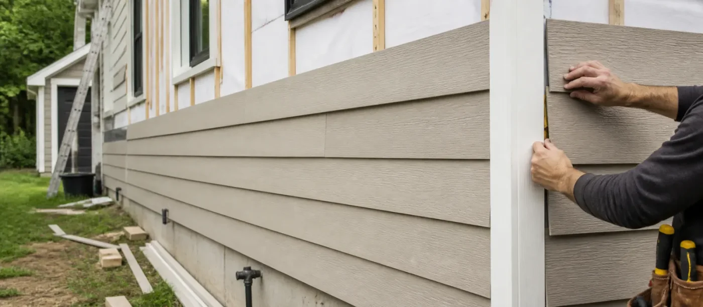
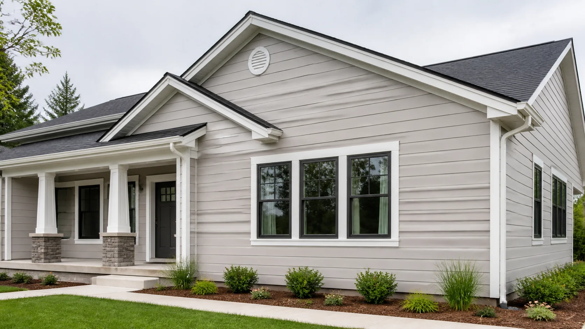

We clear the wall line, check the sheathing and house wrap, and confirm flashing at every opening before layout begins.
Siding
Installation

01 / 04
Installation · Approach
A considered approach to every elevation
Before a single panel goes up, we read the elevation — window lines, corners, drainage paths — so the layout is planned, not improvised.
Every project starts with a measured site walk and a written material plan.
Vinyl, fiber cement and engineered wood each suit different climates and budgets — we match the profile to your home during the first walk-through.
Most single-family installations run one to two weeks depending on elevation size, material and weather.
Yes. We map existing windows, corners and trim lines first so new siding lands cleanly around the details already on the home.
Installation · Process
Built course by course, not guessed at
Panels are aligned, dry-fit and fastened in sequence, so reveals stay straight and seams stay tight across the whole wall.
Starter strips, flashing and expansion gaps are set before the first course is fastened.
Each course is leveled off a chalk line and fastened at manufacturer-specified points, leaving room for natural expansion.
Corner posts and trim are set first, then panels are cut and fitted around windows and doors with protected, sealed edges.
House wrap, flashing and overlaps are detailed at every seam so the wall sheds water correctly from day one.
We recheck level, reveal spacing and trim clearances before closing the wall, so the last course looks intentional rather than forced.
Installation · Quality
Quality that holds its line for years
Every installation is walked and checked against the plan before we call it finished — not just glanced at from the curb.
We leave a clear maintenance note with every completed project.
We check reveal alignment, fastening depth, trim gaps and flashing at every opening before signing off the job.
Workmanship warranties range from 2 to 10 years depending on the package, alongside the manufacturer's material warranty.
Offcuts and packaging are cleared daily, and the property is swept before the final walkthrough.
We walk through basic cleaning, inspection points and seasonal checks so the new siding keeps its finish after the crew leaves.

How a clean siding installation protects the whole facade
Panel alignment, starter strips, trim clearances and fastening depth all work together so the exterior sheds weather cleanly and keeps its finished rhythm.
Explore MoreMeasured Layout
Each course is planned for clean reveals, straight lines and a balanced exterior rhythm.
Weather Layer
Flashing, wraps and overlaps are detailed to help the facade shed rain properly.
Panel Fit
Profiles, fasteners and expansion gaps are set for stable siding performance.
Trim Finish
Corners, openings and edges are resolved so the installation looks complete.

Choosing the right panel profile before the first course goes up
The best material choice balances reveal width, texture, exposure, trim contrast and maintenance expectations before installation begins.
Learn MoreBefore / After
See the Difference
Slide through the same elevation to compare the worn covering with a finished siding installation.

Before AfterWhy Choose Us
Why Homeowners Choose Our Installation Team
From the first measurement to the final trim line, every installation follows the same disciplined process — so the finished exterior looks calm, fits tight and holds up through every season.
We match panel profile, thickness and finish to your climate and architecture, so the material itself is built to hold up before a single fastener goes in.
Courses are measured, aligned and dry-fit before they’re fastened, keeping reveals straight and seams tight across the whole elevation.
House wrap, flashing and overlaps are detailed at every seam and opening so water sheds cleanly instead of finding its way behind the wall.
Corners, openings and edges are finished with the same care as the main field, so the installation reads as one continuous surface.
We finish with a clean job site and clear notes on upkeep, so the exterior keeps its calm rhythm well beyond the final walk-through.
$1,450/ Project
- Weather-resistant materials
- Professional installation
- Clean exterior finish
- Standard color options
- 2-year workmanship warranty
Free on-site estimate
$4,200/ Project
- Full exterior siding installation
- Weather-resistant materials
- Trim and detail work
- Custom color matching
- Long-lasting protection
- 5-year workmanship warranty
Most homeowners choose this
$7,900/ Project
- Premium material upgrade
- Designer trim and detail work
- Long-lasting protection
- Custom color matching
- 10-year workmanship warranty
Includes design consultation
Panel width has a voice.
165 mm
135 mm
105 mm
Feel the material weight.
Vinyl
Surface: even / Maintenance: light / Visual weight: quiet / Best fit: crisp, practical elevations.
Fiber Cement
Surface: fine / Maintenance: considered / Visual weight: grounded / Best fit: composed details.
Engineered Wood
Surface: warm / Maintenance: attentive / Visual weight: tactile / Best fit: expressive facades.